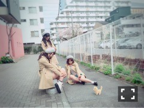
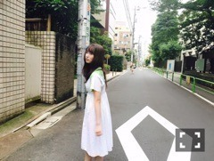

| 2016/09 16 Fri | ひめたん-0o0-その668 |
芸術の秋！！
読書したり、DVD観たり、映画観たり、
20年間生きてきて一番芸術の秋過ごしてる！
寝る前のスマホやテレビを止めて
本や漫画に変えると
なんかぐっすり眠れる気がします( ˇωˇ )
でもねー、あれなんだよね
その作品の世界観が
そのまま夢に出てきちゃうから
ミステリー読んだ日の夜は
なんか怖い夢をみるし
悲しいお話を読んだ日の夜は
なんか悲しい夢をみるし
こどもかっ！
頑張れハタチ！
来週はブックフェアもありますね。
さて、先日、舞台版「こち亀」を
観劇してきました！
パワフルで、エネルギッシュで、
観ているこちらが元気になる！
原作のパワーと、
演者の皆さんのパワーと、
なんかもう色々と圧倒されました！！
サキちゃん素敵だった(´,,•ω•,,｀)
キーパーソンというだけあって
不思議な雰囲気を持った女の子で、
彼女が登場すると舞台の空気が変わる。
凄かった......！
めっちゃ歌ってた！
めっちゃ踊ってた！
めっちゃキラキラしてた～！
生駒ちゃん、皆さん、
最後まで応援しています！
ありがとうございました！

日曜の夜は、らじらー！サンデー
次回のゲストは
声優アーツに中村繪里子さん、
乃木坂から衛藤美彩ちゃんです。
ふつおたやリクエストソングなどなど
おたよりお待ちしてますよ～(^o^)
スマホの方は9/1以降に
らじる★らじるのアプリを
ダウンロードし直していただくと
放送局が東京・大阪・名古屋・仙台に加えて
札幌・広島・松山・福岡の8局から
選べるようになりますので是非！
おたよりの宛先はこちら
土曜日はセブン-イレブンライブ
日曜日は全国握手会ですね。
どちらも名古屋会場！
遊びに来てくれる皆さん
楽しみにしてます(^o^)～♪
全国握手会は かりんちゃんとペア♡
13レーンで待ってます！
日曜日は
乃木のの、らじらー、乃木坂工事中！
ひめ全部出てる！
～お知らせ～
TV
9/17 H♪LINE
雑誌
9/30 月刊エンタメ 11月号
9/30 BUBKA 11月号
10/31 BUBKA 12月号
ラジオ
9/18 乃木坂46の「の」
9/21 RadiPrism
イベント
9/23 東京国際ブックフェアトークショー
リリース
9/30 NOGIBINGO!6 BD&DVD
11/9 16thシングル
最近の写真がないのでいきなりですが
オフショット祭りやりまーす

北野・寺田・中元
子猫にビビるダメ刑事三姉妹。

白いスニーカーをオススメするページ
写真じゃ見えないけど可愛いの履いてた！

秋～～～
中田・中元です～去年の秋～
(＊´・ω・＊)
コメント(660)
2016/09/16 23:12